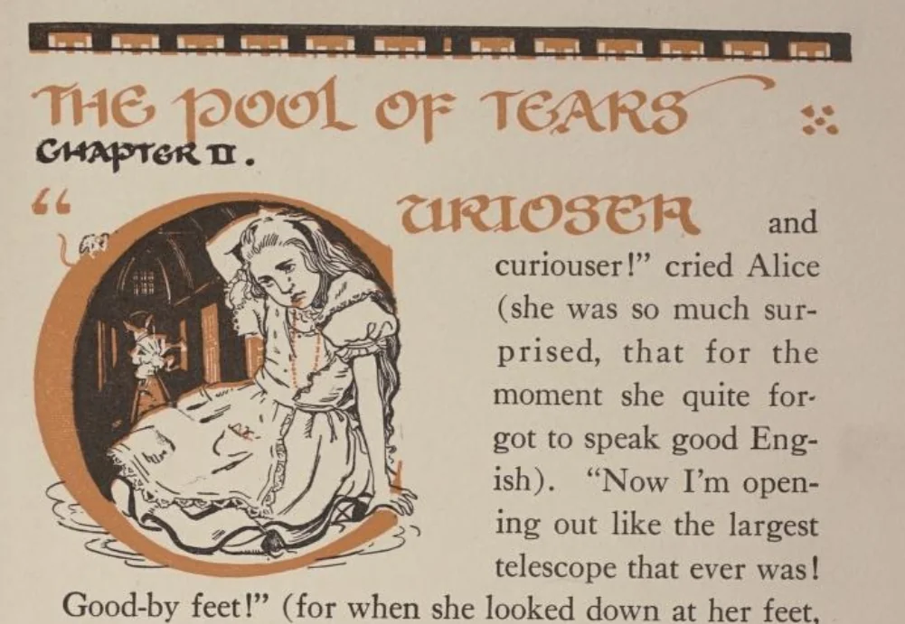
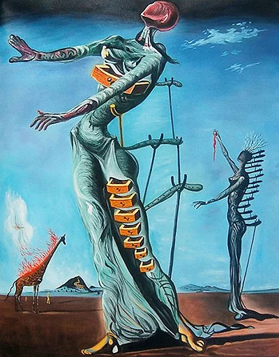
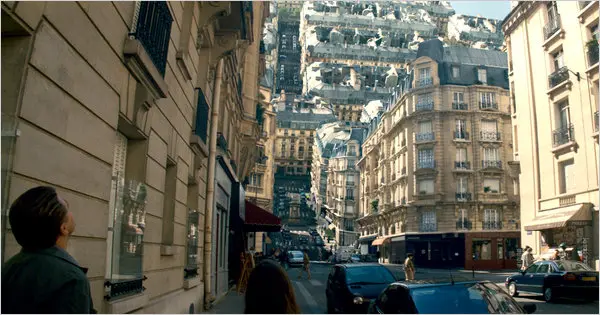
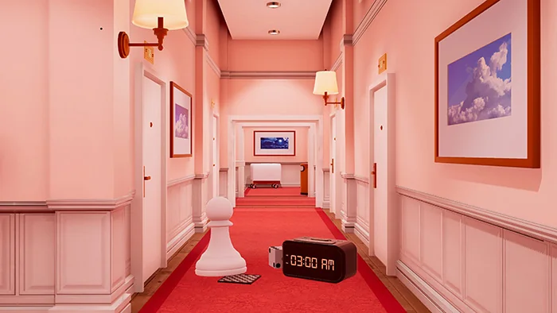
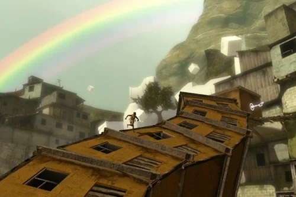
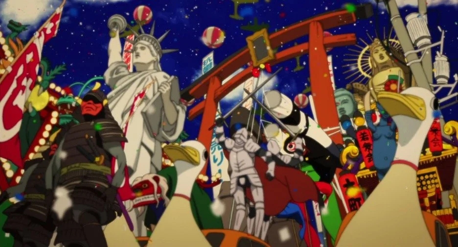

Summarized in: Situated Player Roles Previous: Situated Player Role 3: The Entrant
The Dreamer acts within a world whose mechanics go beyond governing progress: they express an emotional, thematic, or psychological dimension of the story. The player discovers how the rules work while acting within them, and those same actions carry metaphorical meaning. The Dreamer asks, “What does this world express?”
The “Alice” Shift: Progression as Expression
We can see the shift from The Entrant to The Dreamer in Chapters 1 and 2 of Alice’s Adventures in Wonderland. Alice confronts a door about fifteen inches high. The key fits, but she is too large to pass through.
The Entrant’s L.O.P. loop structures what follows:
- Legibility: Alice recognizes the relationship among the key, the door, and her size.
- Opportunity: The “DRINK ME” bottle and “EAT ME” cake suggest that her size can be changed.
- Performance: Alice drinks, eats, and tests her changing body against the threshold.
Within the larger context of Wonderland, the story primes us to expect its dreamlike rules and actions to carry meaning, allowing Alice’s solutions to function as metaphor as well as mechanism. This is where progression couples with expression. Alice’s changing size is both a rule for solving the puzzle and an expression of her unstable relationship to power, identity, and the world around her.
The Entrant discovers what the world permits. The Dreamer discovers what the world’s rules express.

Lewis Carroll, Alice’s Adventures in Wonderland. Illustrated by Gwynedd M. Hudson, 1922 edition.
Surrealism and Dreams
Surrealism was an art movement of the early 20th century. It used dreamlike imagery, unexpected juxtapositions, and illogic to give form to unconscious thoughts, desires, and fears. This transformation of inner experience into visible objects and spaces offers a useful guide to how the Dreamer role can work.

The Burning Giraffe (1937) by Salvador Dalí.
Dream Logic
The Dreamer engages logic — but it is dream logic, cleanly manifested in an early scene in Inception. When Cobb invites Ariadne into a shared dream, she discovers that the space responds to intention: streets fold upward, bridges materialize, and physics bends around the architect’s will.

In a Dreamer game, the first state of L.O.P. — legibility — becomes central to the experience. The rules and relationships of the world are not immediately intuitive. The player discovers them by acting within them, learning to reason as the world responds.

Maquette
Early in Maquette (2021), between narrative scenes, the player stands inside a dome; at its center sits a miniature model of that same space. When a small block is lifted within the model, its massive counterpart moves in the surrounding world. By manipulating the miniature, the player reconfigures the surrounding world and discovers its recursive logic through the response.
The player’s search for passage unfolds across two alternating challenges: configuring the dollhouse-sized architecture, and then platforming through its full-scale counterpart. As the player shifts between these scales, their sense of power and position shifts as well. This structure is not just a puzzle — it becomes surreal language for expressing the emotional stakes of the narrative. Small gestures produce enormous consequences, and meaning emerges through that recursive relationship.
Papo & Yo
Papo & Yo (2012) is the definitive Dreamer project. At a mechanical level, it plays like a standard Entrant game: a boy working through platforming puzzles.

But, crucially, the game is a metaphor for living with an alcoholic parent.
- The Monster represents the father. He is gentle and affectionate until he consumes frogs (alcohol), at which point he becomes violent and destructive.
- The Puzzles reflect the child’s attempt to control what he can — rearranging spaces and creating pathways forward within a world that remains fundamentally unstable.
- The Girl emerges from his imagination. She represents a guiding presence — a way of moving forward, creating distance, and imagining a life beyond the situation.
The mechanics are metaphors. Playing the child of an alcoholic, the player manages the Monster, rearranges spaces, and creates paths forward. Discovery and control unfold together: the player learns the world’s logic while acting within it, and those actions express the attempt to accommodate and ultimately fix the situation. The player eventually confronts the impossibility of doing so. This is what separates The Dreamer from The Entrant: the player still solves puzzles, but those solutions also enact the story’s meaning.
Dreams and Play
Satoshi Kon’s animated film, Paprika, offers a clear image of dreams as living enigmas. Dreams leak into the waking world, culminating in an absurd parade of surreal objects — dancing appliances, walking furniture, and twisting toys — marching through the city.

This is a character’s subconscious made manifest. A Dreamer game can work similarly, turning a character’s inner life into spaces, objects, and rules the player acts upon.
The Dreamer Among the Other Roles
The four roles place discovery and control in different relationships:
- The Investigator reconstructs: What happened?
- The Traveler witnesses: What is this experience?
- The Entrant demonstrates: How does this world work?
- The Dreamer enacts: What does this world express?
The Dreamer presents play on two registers: the player solves a mechanical problem while the same actions carry thematic significance. The player may not recognize the metaphor, but they have performed it.